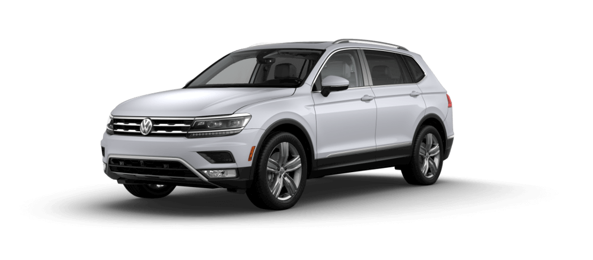
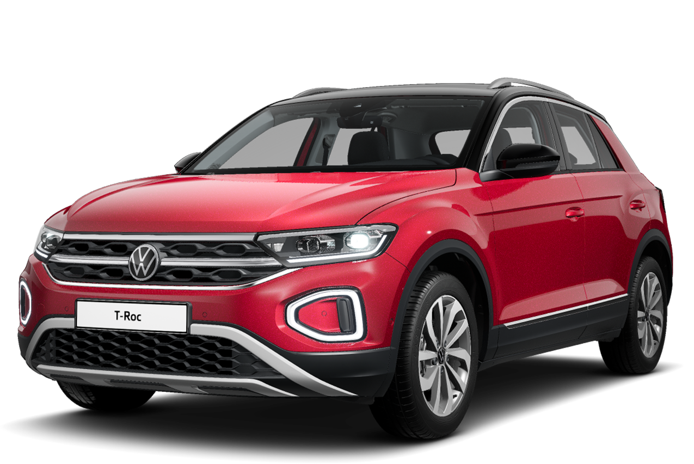
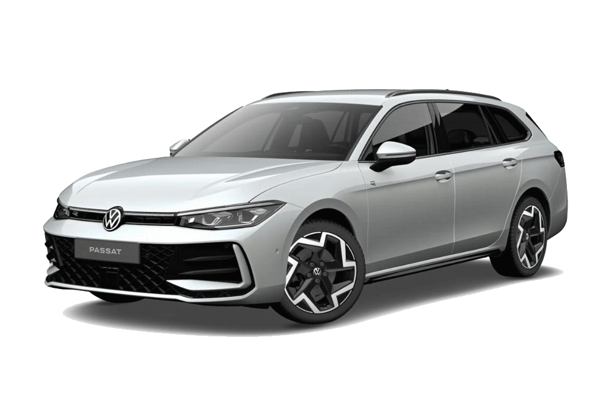
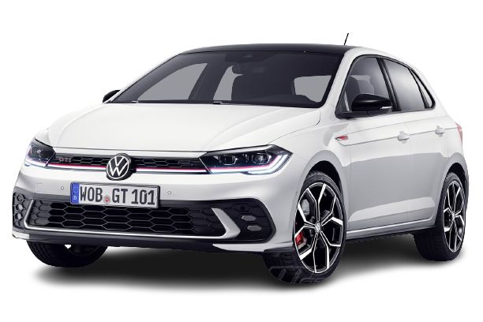
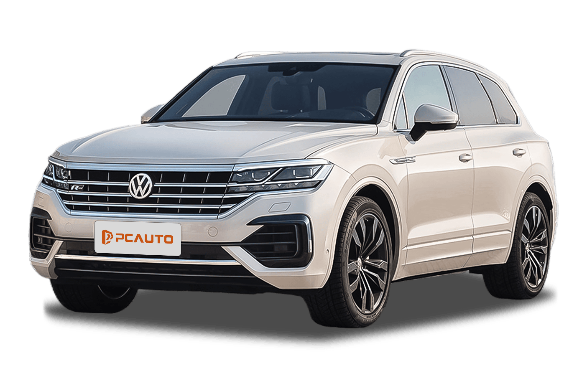
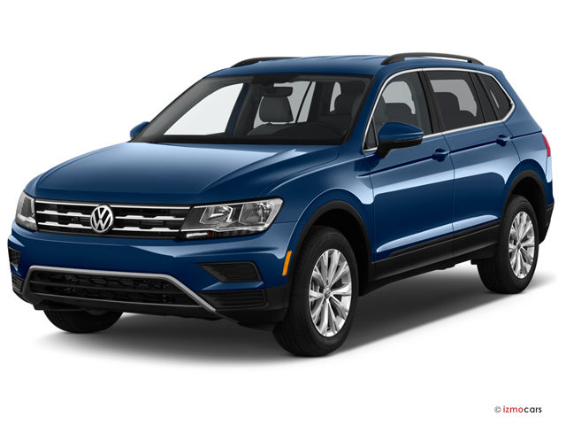
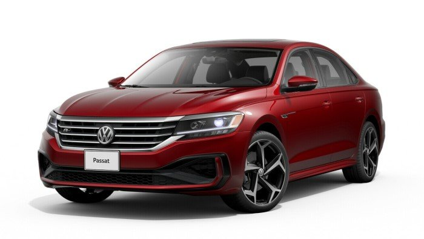
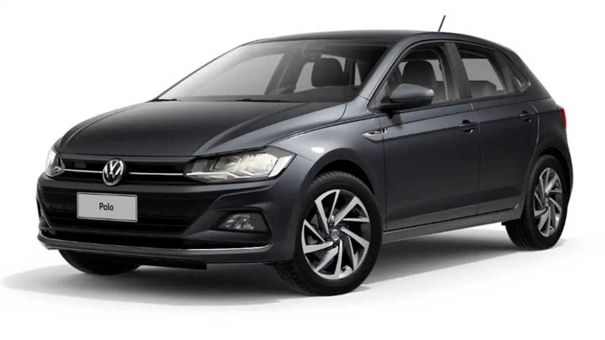
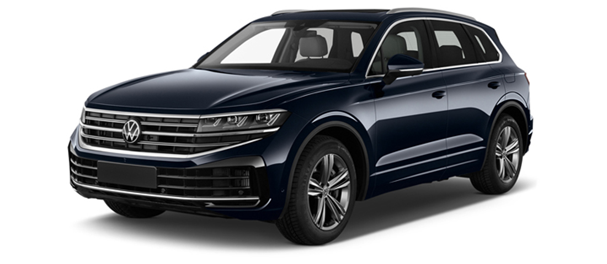

Our best selling cars in 2024-25
| Car Model |
Price |
Year |
| Tiguan |
$28k |
2018 |
Golf  |
$22k |
2024 |
| T-Roc  |
$30k |
2023 |
| Passat  |
$25k |
2023 |
| Polo  |
$22k |
2022 |
| Taureg  |
$28k |
2024 |
A video for our cars preformance and looks
VW Tiguan

Key Features:
- Engine Options & Performance: 2.0L turbocharged 4-cylinder engine, 184 hp, 8-speed automatic transmission
- Exterior Design: Modern, sleek exterior with LED lights, bold grille, and a longer wheelbase for improved space and comfort
- Interior and Comfort: High-quality materials, ample space for passengers and cargo, flexible seating with sliding rear seats
- Technology and Safety: Standard features include Apple CarPlay, Android Auto, forward collision warning, blind-spot monitoring, and more
- Driving Experience: Smooth, controlled ride with an agile feel, available all-wheel drive for better traction
- Cargo Space: 37.6 cubic feet with seats up, 73.5 cubic feet with seats folded
- Pricing: Starting at $25,000, with higher trims reaching up to $35,000+
VW Tiguan!
VW Golf
Key Features:
- Engine Options & Performance: 1.8L turbocharged 4-cylinder engine (170 hp), 2.0L engine in Golf GTI (228 hp), and Golf R (288 hp).
- Exterior Design: Classic hatchback design with modern touches, signature VW grille, and angular headlights.
- Interior & Comfort: Comfortable seating for 5, high-quality materials, and available premium features like a digital cockpit.
- Technology & Safety: Standard features include Apple CarPlay, Android Auto, forward collision warning, and available adaptive cruise control.
- Driving Experience: Engaging and balanced handling, with sportier trims offering faster acceleration and responsive dynamics.
- Cargo Space: 22.8 cubic feet with rear seats up, expanding to 52.7 cubic feet with seats folded.
- Pricing: Starts around $24,000, with GTI and R trims priced higher.
VW Golf!
VW T- rock
Key Features:
- Engine Options & Performance: 1.0L or 1.5L turbocharged petrol engines, delivering up to 150 hp in some configurations. Available with a 6-speed manual or 7-speed DSG transmission.
- Exterior Design: The T-Roc offers a bold, athletic look with sharp lines, a high-mounted grille, and distinctive LED lighting elements. Compact dimensions make it perfect for city driving.
- Interior & Comfort: A high-tech, modern interior with available leather upholstery, customizable interior lighting, and a large infotainment touchscreen (up to 9.2 inches).
- Technology & Safety: Standard features include a 10.25-inch digital cockpit, Apple CarPlay, Android Auto, and safety features like lane-keeping assist, adaptive cruise control, and automatic emergency braking.
- Driving Experience: Agile handling with a smooth, comfortable ride. The T-Roc is designed to deliver a dynamic driving experience, available in both front-wheel and all-wheel drive configurations.
- Cargo Space: 445 liters of boot space, with rear seats that fold down for larger items, making the T-Roc practical for both everyday and long-haul journeys.
- Pricing: The 2023 T-Roc starts at around $25,000, with higher trims offering more features and enhanced performance options.
VW T-roc!
VW Passat

Key Features:
- Engine Options & Performance: 2.0L turbocharged 4-cylinder engine with 174 hp, paired with a 6-speed automatic transmission. Efficient and responsive driving experience with a smooth ride.
- Exterior Design: A sleek and sophisticated design with sharp lines, LED headlights, a modern grille, and a large trunk for added practicality.
- Interior & Comfort: Premium interior with high-quality materials, spacious seating for five passengers, and comfortable ride quality. Available leather upholstery and customizable interior lighting options.
- Technology & Safety: Features include a 6.3-inch or 8-inch infotainment system, Apple CarPlay, Android Auto, navigation, and safety features like forward collision warning, automatic emergency braking, and adaptive cruise control.
- Driving Experience: Comfortable handling with a smooth ride. The Passat offers a refined, stable driving experience, suitable for both city driving and long road trips.
- Cargo Space: 15.9 cubic feet of trunk space with a flat-folding rear seat for larger items, making it practical for carrying luggage and other bulky items.
- Pricing: The 2023 Passat starts around $25,000, with higher trims offering additional features and premium options.
VW Passat!
VW Polo

Key Features:
- Engine Options & Performance: The Polo offers a range of engine options, including a 1.0L 3-cylinder turbocharged engine that delivers up to 95 hp, and a 1.5L 4-cylinder with up to 150 hp in the Polo GTI model. The engines are paired with a 5-speed manual or 7-speed DSG transmission.
- Exterior Design: The Polo’s modern design includes sharp lines, a sleek front grille, LED headlights, and a sporty stance. Compact in size, it’s perfect for urban environments but still offers ample space inside.
- Interior & Comfort: The interior is well-appointed with high-quality materials, a user-friendly infotainment system, and comfortable seating for up to five passengers. It’s a practical and comfortable environment for both the driver and passengers.
- Technology & Safety: Features include a 6.5-inch or 8-inch touchscreen, Apple CarPlay, Android Auto, a rearview camera, and a range of safety features such as automatic emergency braking, lane-keeping assist, and adaptive cruise control.
- Driving Experience: Known for its nimble handling, the Polo provides an engaging and comfortable driving experience. The suspension absorbs bumps well, and it has a responsive steering system that makes it fun to drive, especially in tight spaces.
- Cargo Space: The Polo offers 350 liters of boot space with the rear seats up, expanding to 1,125 liters when the seats are folded down, providing excellent practicality for a car of its size.
- Pricing: The 2022 Polo starts at approximately $20,000, with higher trims like the Polo GTI offering enhanced performance and additional features.
VW Polo!
VW Taureg

Key Features:
- Engine Options & Performance: The 2024 Touareg comes with a choice of powerful engines, including a 3.0L V6 turbocharged engine with 335 hp or a 4.0L V8 turbocharged engine offering up to 420 hp. The engine is paired with an 8-speed automatic transmission and standard all-wheel drive.
- Exterior Design: The Touareg has a bold and athletic design, with sharp lines, a large front grille, and sleek LED headlights. Its commanding presence on the road is complemented by a premium set of alloy wheels and a sophisticated profile.
- Interior & Comfort: The interior features high-quality materials, plush seating for five passengers, and a spacious cabin. The Touareg offers luxurious touches such as leather upholstery, a panoramic sunroof, and advanced climate control for optimal comfort.
- Technology & Safety: The 2024 Touareg is equipped with an advanced infotainment system that includes a 15-inch touchscreen, navigation, Apple CarPlay, Android Auto, and a premium sound system. Safety features include adaptive cruise control, lane-keeping assist, automatic emergency braking, and a 360-degree camera system.
- Driving Experience: Known for its smooth and refined ride, the Touareg offers a perfect balance of comfort and handling. The dynamic drive system allows the driver to switch between different driving modes, whether it's for a smooth highway ride or more rugged off-road capabilities.
- Cargo Space: The Touareg offers ample cargo space with 31.9 cubic feet of storage, expanding to 64 cubic feet with the rear seats folded down, providing plenty of room for luggage and gear.
- Pricing: The 2024 Touareg starts at approximately $55,000, with higher trims offering additional luxury features and enhanced performance options.
VW Taureg!